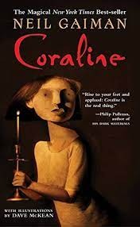

Coraline Jones, an 11-year-old girl, moves into a new apartment with her busy, distracted parents. She explores the old house and meets her eccentric neighbors -
two elderly actresses, Miss Spink and Miss Forcible, and Mr. Bobo, a man training a mouse circus.
One day, Coraline discovers a mysterious locked door that opens onto a brick wall. That night, she hears noises and follows a shadowy figure to the door, which is now
unlocked. Behind it is a long, dark corridor leading to another flat that is a twisted mirror version of her own. There she meets her "Other Mother" and "Other Father" -
button-eyed doppelgangers of her real parents who seem perfect but have sinister intentions.
The Other Mother convinces Coraline to stay, promising her anything she desires. But Coraline soon realizes the Other Mother is actually a malevolent entity called the
Beldam who traps children in her world. The Beldam sews buttons over the children's eyes and keeps their souls trapped.
Coraline escapes back to the real world, but her real parents are gone. She returns to the Other World to rescue them and the souls of three ghost children the Beldam has
trapped. With the help of a mysterious black cat, Coraline outsmarts the Beldam and frees her parents and the ghost children.
In the end, Coraline returns home, wiser and more appreciative of her real life and family. The Beldam's severed button hand continues to pursue Coraline, but she traps it
down an old well, finally defeating the evil entity.
Themes
The dangers of temptation and getting what you wish for
The importance of family and appreciating what you have
Courage, resourcefulness and the power of a child's imagination
The blurring of fantasy and reality
"Coraline" is a creepy, imaginative fairy tale that explores dark themes through the eyes of a brave, curious young heroine. Gaiman's vivid storytelling and Coraline's
resilience make this a modern classic of children's literature.